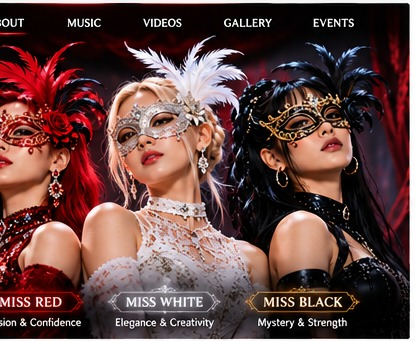

01 / THE BAND
Three Colors. Three Identities. One Unforgettable Performance.
Research Question 1
Who is the band and what is its identity?
Masquerade After Dark is an imagined three-member K-pop girl group blending electronic dance, hip-hop, and R&B. Its concept brings together masquerade masks, cinematic performances, bold styling, and a continuing story of self-expression and transformation.

Passion & Confidence
Elegance & Creativity
Mystery & Strength
The proposed website introduces each member through dedicated profiles, signature colors, and a shared group narrative.
Academic concept only. The band and proposed digital capabilities are fictional. This is not a functioning artist website. Visuals are illustrative.